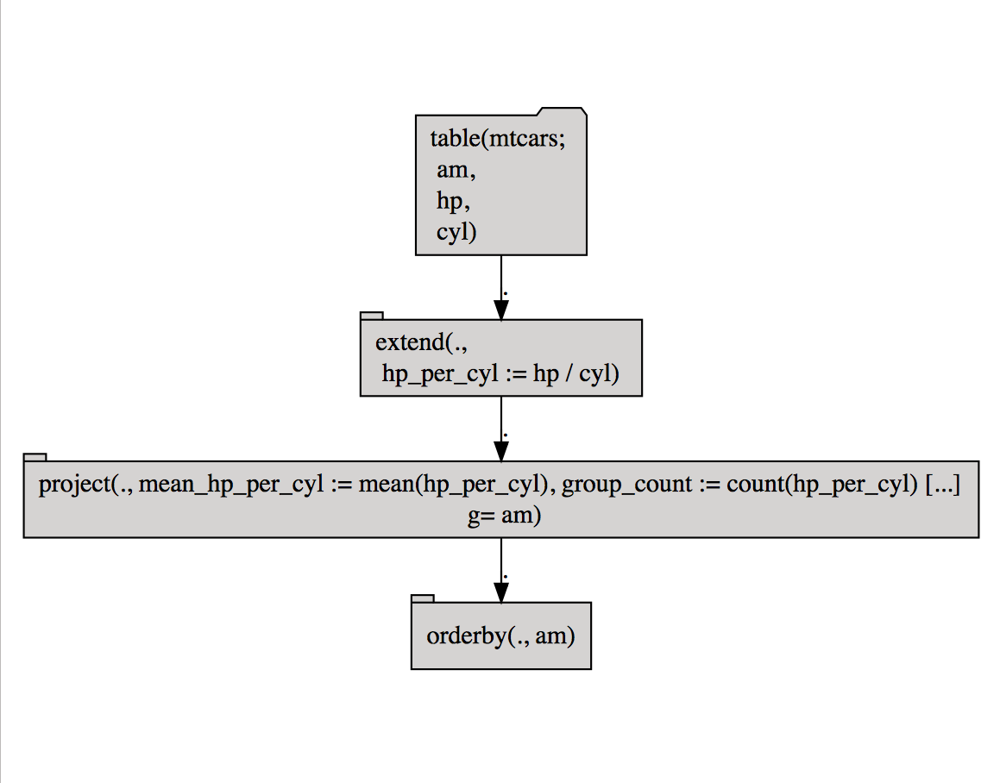

vignettes/Parameterized_rquery.Rmd
Parameterized_rquery.Rmdrquery 1.2.0 now incorporates bquote() quasi-quotation.
In fact this is enough to allow rqdatatable to directly work the indirect column names example from our bquote() articles (1, 2).
First let’s check what packages we have available for these examples.
have_rqdatatable <- FALSE
if (requireNamespace("rqdatatable", quietly = TRUE)) {
library("rqdatatable")
have_rqdatatable <- TRUE
}
have_db <- FALSE
if (requireNamespace("RSQLite", quietly = TRUE) &&
requireNamespace("DBI", quietly = TRUE)) {
have_db <- TRUE
}library("rquery")
# define our parameters
# pretend these come from far away
# or as function arguments.
group_nm <- "am"
num_nm <- as.name("hp")
den_nm <- as.name("cyl")
derived_nm <- as.name(paste0(num_nm, "_per_", den_nm))
mean_nm <- as.name(paste0("mean_", derived_nm))
count_nm <- as.name("group_count")Immediate mode example (note we are using newer rquery 1.2.1 notation “extend()” instead of extend_nse()).
# apply a parameterized pipeline using bquote
mtcars %.>%
extend(.,
.(derived_nm) := .(num_nm)/.(den_nm)) %.>%
project(.,
.(mean_nm) := mean(.(derived_nm)),
.(count_nm) := length(.(derived_nm)),
groupby = group_nm) %.>%
orderby(.,
group_nm)## am mean_hp_per_cyl group_count
## 1: 0 22.71491 19
## 2: 1 23.41987 13Stored operator tree examples.
# make an abstract description of the table to start with
td <- mk_td("mtcars",
as.character(list(group_nm, num_nm, den_nm)))
# helper function to adapt to later database environemnt
count <- function(v) { length(v) }
# capture the operator pipeline
ops <- td %.>%
extend(.,
.(derived_nm) := .(num_nm)/.(den_nm)) %.>%
project(.,
.(mean_nm) := mean(.(derived_nm)),
.(count_nm) := count(.(derived_nm)),
groupby = group_nm) %.>%
orderby(.,
group_nm)## am mean_hp_per_cyl group_count
## 1: 0 22.71491 19
## 2: 1 23.41987 13We can display the pipeline in various forms.
## table(mtcars;
## am,
## hp,
## cyl) %.>%
## extend(.,
## hp_per_cyl := hp / cyl) %.>%
## project(., mean_hp_per_cyl := mean(hp_per_cyl), group_count := count(hp_per_cyl),
## g= am) %.>%
## orderby(., am)
The same example in a database.
# connect to a database
raw_connection <- DBI::dbConnect(RSQLite::SQLite(), ":memory:")
# build a representation of the database connection
dbopts <- rq_connection_tests(raw_connection)
db <- rquery_db_info(connection = raw_connection,
is_dbi = TRUE,
connection_options = dbopts)
print(db)## [1] "rquery_db_info(SQLiteConnection, is_dbi=TRUE, note=\"\")"# copy data to db
tr <- rquery::rq_copy_to(db, "mtcars", mtcars,
temporary = TRUE,
overwrite = TRUE)
print(tr)## [1] "table(`mtcars`; mpg, cyl, disp, hp, drat, wt, qsec, vs, am, gear, carb)"# materialize result remotely (without passing through R)
res <- materialize(db, ops)
DBI::dbReadTable(raw_connection, res$table_name)## am mean_hp_per_cyl group_count
## 1 0 22.71491 19
## 2 1 23.41987 13## am mean_hp_per_cyl group_count
## 1 0 22.71491 19
## 2 1 23.41987 13## SELECT * FROM (
## SELECT `am`, avg ( `hp_per_cyl` ) AS `mean_hp_per_cyl`, count ( `hp_per_cyl` ) AS `group_count` FROM (
## SELECT
## `am`,
## `hp` / `cyl` AS `hp_per_cyl`
## FROM (
## SELECT
## `am`,
## `hp`,
## `cyl`
## FROM
## `mtcars`
## ) tsql_03607070317623383313_0000000000
## ) tsql_03607070317623383313_0000000001
## GROUP BY
## `am`
## ) tsql_03607070317623383313_0000000002 ORDER BY `am`